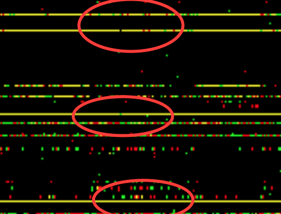

This is a glimpse at the data presented by the Thousand Genomes variants accessed via the GA4GH Genomics API. There are variant calls for samples that are being accessed via HTTP.
In this variant set, each variant record contains the calls made against it, i.e. the individual genetic variations. In the visualization below, each variant is given a row and the calls made against it are the columns, similar to the format of VCF. This gives us an overview of the data that does not map directly to genomic position, although ordered by it.
Each call for the variant is drawn as a single pixel. The pixels that are red represent a call on the first haplotype, green on the second, and yellow for both. We are looking at the beginning region of the first chromosome.
Calls
VariantsThere are interesting features in these data that we can observe visually. It appears that for some variants, nearly all samples received a positive call on both haplotypes. We can inspect these shared variants by selecting the first variant observed in more than NaN of the population. Here is one of those variants in GA4GH format:
Well.. will be...
The long string identifiers are internal to the server instance and can be accessed directly. Some variants are named in the dbSNP database here.
The Thousand Genomes project, when generating this dataset, calculated allele frequencies for each variant, which are available in the 'info' field of the record. We would expect them to be high for the variants that appear as yellow bands. For this variant the allele frequencies were:
still searching...
This variant was labeled by the data preparers. GA4GH provides a variant annotation protocol that can be used to access Thousand Genomes functional annotations, which go beyond what is included in the basic release. By performing a search for the same region in the variant annotation set we find this variant has been tagged as ''.
So far, this script has analyzed NaN:) variants and have been found to be shared by more than participants. These variants span the range 0 to 0 in genomic coordinates.
Using the Sequence Annotations protocol of the genomics API we can learn more about the site of a variant. In this implementation the gencode genes annotations provide features for regions of DNA. So far the following genes have been observed:
To learn more about the GA4GH and the Genomics API please visit github.